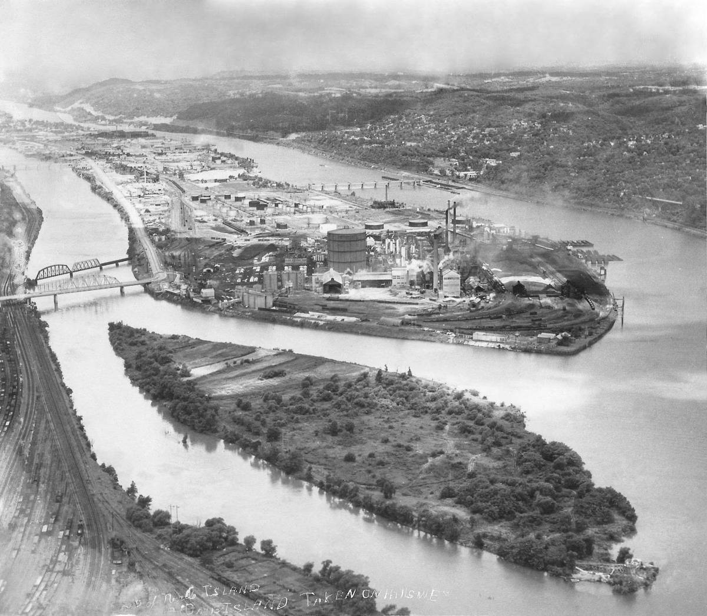

HART Railroad
Pittsburgh & Chartiers Valley Division
Welcome to Neville Island — where a single furnace and two miles of rail sparked an industrial legacy, over a century old and still at work in the heart of the Ohio River Valley.
Step into the island
HART Railroad is an HO scale layout inspired by Neville Island, the industrial island in the Ohio River just below Pittsburgh. From 1899 until January 1994 the Pittsburgh & Ohio Valley Railway switched the island's furnaces and coke ovens. HART's Pittsburgh & Chartiers Valley Division takes up that work on the layout, set between 1996 and 2016. Explore the sections below, or experience a shift on the railroad with Extra East: HART Railroad, a study guide trivia game.
The island and its story
Prototype
How the island went from farms to furnaces and coke ovens, who owned the plants and railroads, and the old photographs, advertisements and maps. Articles cover the Pittsburgh & Ohio Valley and the Chartiers Branch.
Explore PrototypeRunning a session
Operations
Read the primer, car cards and station maps before a first session. Regular crews work from the crew sheets and timetable, and the dispatcher guides cover the CTC panels.
Explore OperationsHow the layout works
Behind the Scenes
The build, and the radio nodes, signals and software that run the trains. Reference pages generated from the railroad's data, free tools for other layouts, and progress toward NMRA and OPSIG awards.
Explore Behind the ScenesAI in model railroading
The Diverging Route
How AI helped with each craft on this layout, from research and 3D-printed parts to wiring, scripts and paperwork. Each job says what was asked, what came out and how well it went.
Explore The Diverging RouteNew here? About HART explains what the layout models and the island history behind it.